| Provincias | Informacion |
|---|---|
| Pagina Principal | Salamanca |
| Avila |
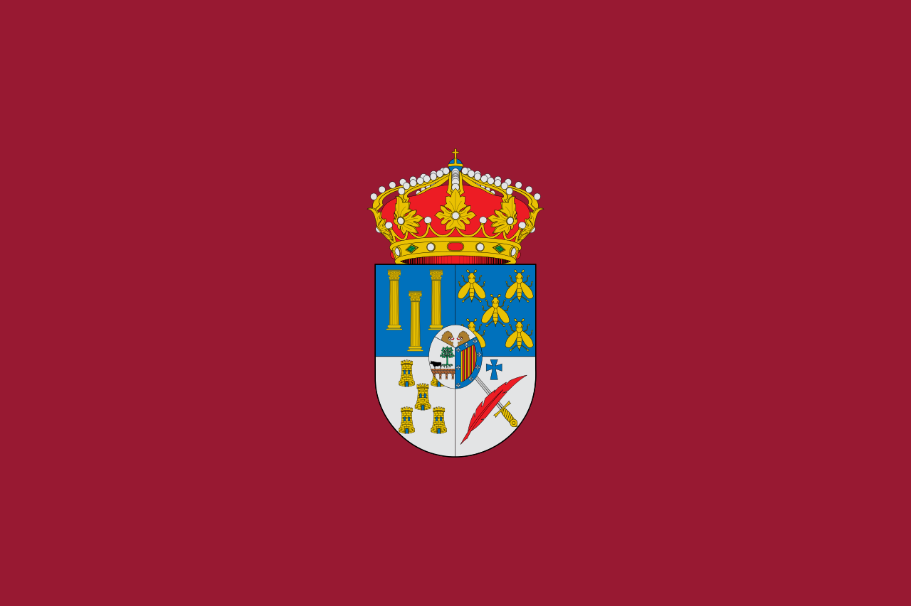
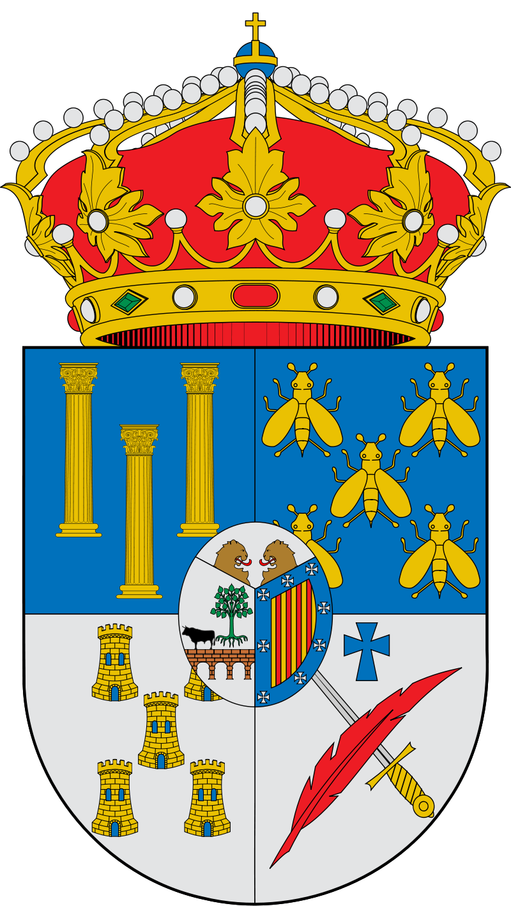
Video-presentacion Salamanca Si el video no se reproduce correctamente pulse aqui
LOCALIZACIONLa provincia de Salamanca ocupa una superficie geográfica de 12 349,06 km², lo que la convierte en la tercera provincia de Castilla y León por extensión después de las de León y Burgos y en la decimosexta de España. Limita con la provincia de Zamora al norte, con la provincia de Valladolid al noreste, con la provincia de Ávila al este, con Extremadura al sur y con Portugal al oeste. 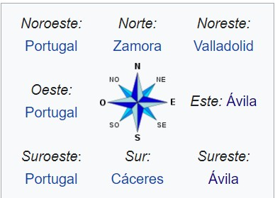 MapaSi el mapa superior no funciona haga click aqui Ir arribaLOCALIDADES PRINCIPALES
Ir arribaGEOGRAFIAPosee altitud media de 823 m. y existen grandes diferencias entre unas zonas y otras. Con 2428m., el punto más alto de la provincia es el pico del Canchal de la Ceja, en la Sierra de Béjar, y con 116m., el punto más bajo es el valle del Salto de Saucelle, en las arribes. Sus entidades geográficas diferenciadas son la dehesa (que ocupa toda la zona conocida como Campo Charro), la serranía (Sierras de Gata, Francia-Quilamas y Béjar), la llanura cerealista (principalmente en La Armuña, la Tierra de Peñaranda y parte de la Tierra de Alba), el regadío extenso (comarca de Las Villas) y las arribes del Duero, el Tormes, el Uces, el Huebra y el Águeda (en las comarcas de La Ribera y El Abadengo). La red hidrográfica salmantina está conformada principalmente por la cuenca hidrográfica del Duero. Sus ríos más importantes son el Tormes, el Águeda, el Huebra, el Yeltes y el propio Duero Varios cauces tienen regulado su caudal mediante pantanos, embalses y presas. La de Salamanca, con más de 3400 hm³, es la tercera provincia española con mayor capacidad de embalse de agua, sólo superada por las de Badajoz y Cáceres. Destacan la presa y el embalse de Almendra como la presa más alta y uno de los embalses más extensos de España. Ambas forman parte de los Saltos del Duero, un zamorano-salmantino complejo hidroeléctrico muy importante a nivel nacional. ClimaLa provincia presenta un clima mediterráneo continentalizado con destacada influencia atlántica. Se caracteriza por sus inviernos fríos y semihúmedos y sus veranos calurosos y secos. La temperatura media anual de la ciudad de Salamanca es de alrededor de 12 °C. Es una de las capitales de provincia con las mínimas más frías de España en invierno. En las Arribes existe un microclima mediterráneo que hace que las temperaturas sean más cálidas. Está motivado principalmente por la menor altitud de la zona. En el observatorio de Mieza se registran 12,2 °C de temperatura media anual mientras que en la presa de Aldeadávila y en la presa de Saucelle se registran 15,5 °C y 17,1 °C respectivamente. Esto resulta especialmente llamativo al compararlo con los datos de cualquier ciudad mediterránea pues no difieren mucho. Es así, unos de los puntos más cálidos de la provincia. La zona con mayor pluviosidad de la provincia es la de serranía. Las Sierras de Gata, Francia-Quilamas y Béjar recogen alrededor de 1000 mm anuales de precipitación y están incluidas en lo que se conoce como la España húmeda. Destaca especialmente como lugar lluvioso la localidad de Navasfrías, en El Rebollar. La comarca de Vitigudino es también bastante húmeda ya que registra una media de 700 mm anuales. Por el contrario, la zona menos lluviosa, con cerca de 400 mm anuales, es la comarca de Las Villas y alrededores de Salamanca. Si el widget superior no funciona haga click aqui Ir arribaHISTORIAEdad AntiguaEn el territorio de las actuales provincias españolas de Ávila y Salamanca, y en parte de las de Cáceres, Toledo y Zamora, estuvieron asentados los vetones, un pueblo prerromano de cultura celta del que existen numerosos restos arqueológicos por toda la provincia. Varias localidades tienen un origen vetón. Algunas de ellas importantes. Es el caso de Salamanca (Salmantica), Ledesma (Bletisama) y Ciudad Rodrigo (Augustobriga), sus poblados solían establecerse a orillas de los ríos y/o en cerros. La que después sería la calzada romana de la Plata, debió de ser un camino transitado con anterioridad por los tartesos, debido al comercio de estaño. Esto explicaría la cercanía del gran complejo arqueológico del Berrueco, situado cerca de El Tejado y construido a modo de acrópolis. Uno de los legados más llamativos de los vetones son los verracos, unas esculturas de piedra con forma de toro o de cerdo encontradas en varios puntos de la provincia. Su función ha sido siempre muy debatida. Lo que está claro es que denotan la importancia del ganado en esta cultura. Dominacion RomanaTras la expansión progresiva del dominio romano por la península ibérica, el territorio de la actual provincia de Salamanca quedó integrado en el Imperio romano dentro de la provincia de Lusitania, dentro del conventus iuridicus Emeritense. Destacó en esta época la importancia de Salmántica, Bletisa y Miróbriga, la primera situada en la Vía de la Plata, el principal eje de comunicación romano que atravesaba el oeste hispano. Son testimonio de este periodo histórico el puente romano de Salamanca, las tres columnas de Ciudad Rodrigo, el Puente Mocho de Ledesma, o las numerosas estelas e inscripciones existentes por toda la provincia. Edad MediaTras la caída de Roma, los alanos se asentaron en el antiguo solar vetón, siendo sustituidos en el control de la actual Salamanca por los visigodos, con quienes la ciudad de Salamanca ya era sede episcopal. La invasión musulmana de la península ibérica a inicios del siglo VIII echó a los visigodos del control de estas tierras, librando el último rey godo, Rodrigo, su última batalla en tierras de la actual provincia salmantina, en Segoyuela de los Cornejos. Así, Salamanca quedó en el área denominada "tierra de nadie", una extensa área geográfica situada entre el Sistema Central y la Cordillera Cantábrica que quedó semidespoblada en esta época. Tras el primer intento repoblador de Ramiro II en la margen derecha del Tormes, que según Antonio Llorente debió ser de escasa importancia, el territorio salmantino se vio expuesto a una serie de aceifas por parte de las tropas musulmanas de Almanzor a finales del siglo X. Fueron las posteriores repoblaciones, que vinieron de la mano Alfonso VI y Fernando II de León, las que crearon la mayoría de las localidades actuales de la provincia. De estos monarcas destaca la concesión de fueros a Salamanca por parte de Alfonso VI de León y la restauración del obispado salmantino en el 1102. Asimismo habría que señalar la creación del obispado de Ciudad Rodrigo por parte de Fernando II de León, quien segregó también el concejo de Ledesma del de Salamanca, dándole fueros, hechos que llevaron a la batalla de la Valmuza. Un acontecimiento especialmente relevante por lo que supuso con posterioridad, fue la creación en 1218 de la Universidad de Salamanca por parte de Alfonso IX de León, entonces aún como Estudio General del reino, viéndose elevado a la categoría de universidad por real cédula de Alfonso X el Sabio, ratificada por el papa Alejandro IV en 1255. La Baja Edad Media trajo consigo las luchas entre bandos nobiliarios en Salamanca y Ciudad Rodrigo, así como la creación de múltiples señoríos nobiliarios, como el Condado de Ledesma o el Ducado de Alba de Tormes. Edad ModernaA partir del siglo XV, con la reducción de los concejos que tenían derecho a voto en Cortes, se empieza a configurar el espacio provincial que dará lugar posteriormente a la actual Salamanca. De este modo, las localidades que hasta entonces dependían de los concejos de Ledesma, Ciudad Rodrigo, Montemayor del Río, Béjar o Alba de Tormes para el voto en Cortes, pasaron a hacerlo del de Salamanca. Tras la decadencia del siglo XVII, en la que influyó notablemente la riada de San Policarpo en el Tormes en 1626, la ciudad de Salamanca tuvo en el XVIII un nuevo momento de esplendor, finalizándose en dicho siglo la construcción de la Plaza Mayor y la Catedral Nueva, azotada por el Terremoto de Lisboa de 1755. Anteriormente, durante la Guerra de Sucesión, la provincia sufrió los rigores de verse en un bando distinto al escogido por el reino de Portugal, lo que motivó la toma de Ciudad Rodrigo por parte de las tropas portuguesas en 1706, liberada al año siguiente por el ejército borbónico. Durante la Edad Media y Moderna, la condición de frontera de parte del territorio salmantino afectó en gran medida a los habitantes de ambos lados de la Raya, tanto en la cotidianidad de la paz como en la tensión de la guerra. Edad ContemporaneaEl siglo XIX se inició con la Guerra de la Independencia, en la cual la provincia de Salamanca fue un campo de batalla decisivo, destacando el guerrillero Julián Sánchez "El Charro". En esta guerra la ciudad de Salamanca fue ocupada por las tropas napoleónicas en 1809, hasta la decisiva batalla de los Arapiles en 1812, ocurrida tras los dos sitios de Ciudad Rodrigo. El fin de la Guerra de Independencia trajo en la provincia el inicio de la época dorada de la industria textil de Béjar, que se prolongó hasta finales del siglo XIX. Tras la implantación del liberalismo, en 1833 se creó la actual provincia de Salamanca, que quedó encuadrada en la Región Leonesa, pasando la ciudad de Salamanca a albergar la sede de la Diputación de Salamanca; la ciudad de Béjar intentó sin éxito anexionarse en 1850 a la provincia de Ávila y en 1868 trató de constituirse como cabeza de una nueva provincia. Pese a no ser epicentro de la Primera Guerra Carlista, en la provincia se dieron algunos enfrentamientos entre tropas liberales y carlistas, como el acaecido en Vitigudino en diciembre de 1838.74 Posteriormente, en 1868, en el contexto de la Revolución Gloriosa, Béjar fue la ciudad que encabezó la misma en la provincia, formándose en esta ciudad una Junta Revolucionaria de Defensa. En 1873, tras proclamarse la Primera República, Salamanca y Béjar sufrieron mutuos levantamientos cantonalistas que, en el caso salmantino, tras cuatro días de éxito, fue sofocado el 26 de julio de 1873, mientras que, en el caso bejarano, no pasó de un intento encabezado por varios concejales y el batallón de voluntarios de la república. El siglo XIX también trajo consigo la llegada del ferrocarril a la provincia, que vivió sus principales hitos con la conexión con Portugal por Vilar Formoso en 1886 y la apertura de la Vía de la Plata en 1896, así como la conexión con Madrid ya en el siglo XX, demorada hasta 1926. En 1978 la Constitución Española fue aprobada mayoritariamente por los salmantinos, mientras que en 1983 la provincia quedó integrada en la comunidad autónoma de Castilla y León junto a las otras dos provincias de la Región Leonesa y seis provincias de Castilla la Vieja. Se abría así un periodo en que los salmantinos han pasado a elegir mediante sufragio sus representantes en los ayuntamientos, así como en los parlamentos autonómico y nacional. Ciñéndonos a la ciudad de Salamanca, cabe destacar desde la Transición como acontecimientos más importantes, su declaración como Patrimonio de la Humanidad en 1988, así como el de Ciudad Europea de la Cultura en 2002. Ir arribaCULTURAEl Museo de Salamanca, también conocido como Museo Provincial o Museo de Bellas Artes fue creado en 1848.Desde 1948 está situado en la Casa de los Álvarez Abarca o de los Doctores de la Reina, un edificio típico de la arquitectura salmantina de principios del siglo XVI. Tiene tres secciones: arqueología, bellas artes y etnología. La más amplia de las tres es la de bellas artes, con una exposición permanente, mientras que las de arqueología y etnología, de menor tamaño, son renovadas periódicamente. Dentro de la parte dedicada a las bellas artes destacan el retablo de estilo churrigueresco de Bernardo de Carvajal, situado en el zaguán del edificio, y la sala de techo policromado mudéjar, además de numerosas obras de gran valor que abarcan el período comprendido entre los siglos XIV y XX. En los jardines del edificio se pueden ver verracos y estelas romanas. 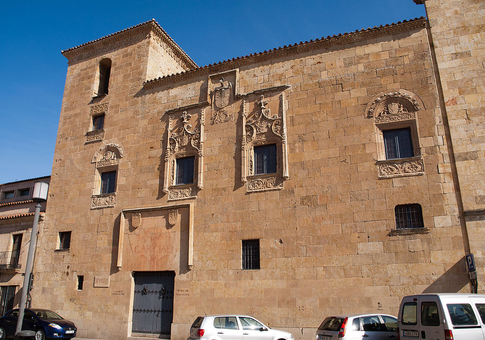l Museo de Art Noveau y Art Déco es uno de los museos más conocidos de Salamanca, en gran parte por su ubicación, la Casa Lis, un magnífico edificio de estilo modernista. Este Museo surgió en 1995 gracias a la donación de Manuel Ramos Andrade, un anticuario salmantino de origen humilde que recopiló durante toda su vida un gran número de objetos, principalmente muñecas de porcelana, criselefantinas y piezas de vidrio.La Fundación que gestiona su patrimonio ayuda, según su voluntad, a los niños y ancianos de su localidad natal, Navasfrías. 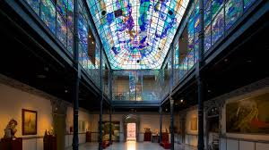El Centro Documental de la Memoria Histórica es un centro creado a partir del Archivo General de la Guerra Civil Española, que trata de conservar y facilitar sus fondos documentales para la investigación, la información y la cultura. El Centro Documental, conocido popularmente en Salamanca como "el Archivo", tiene sus orígenes en el hecho de que la ciudad fue sede del Cuartel General de Franco en tiempos de la Guerra Civil española. En aquellos momentos, para las fuerzas franquistas era una necesidad disponer de un lugar donde reunir documentación que les permitiera identificar a los enemigos y personas contrarias a las ideas del Régimen. El Archivo acoge un gran número de fondos documentales sobre las épocas de la Guerra Civil y de la post-guerra y tres importantes exposiciones: una sobre la Guerra Civil, otra sobre la Masonería y una Logia Masónica. Además, durante el horario de apertura al público, se proyectan dos audiovisuales donde se explica la historia del Centro e información general sobre la Masonería. 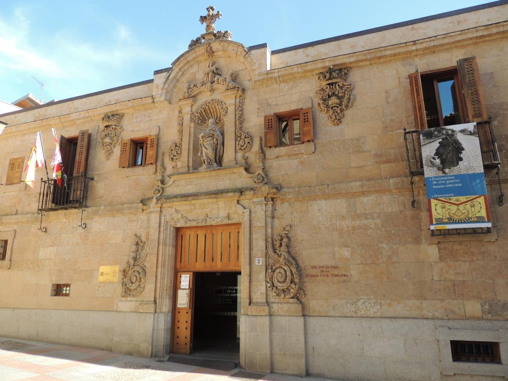Ir arribaNATURALEZAEn toda la provincia existen cinco espacios naturales protegidos a nivel regional. Son el parque natural de Arribes del Duero, el parque natural de Las Batuecas - Sierra de Francia, el Espacio natural protegido de El Rebollar, la Sierra de Candelario y la Sierra de las Quilamas. En su totalidad, ocupan una superficie de 210 282 hectáreas. Las Sierras de Francia y Béjar y la Meseta Ibérica han sido declaradas reserva de la biosfera. Parque natural de Arribes del DueroSe extiende desde el límite con la provincia de Zamora hacia el sur siguiendo la línea de la frontera con Portugal. La palabra Arribes es un vocablo leonés utilizado para denominar a este territorio, que se caracteriza por los grandes desniveles de su orografía y la peculiar geomorfología que provocan los cursos fluviales de varios ríos, que en la parte salmantina son el Duero, el Águeda, el Huebra, el Tormes y el Uces. La zona de las Arribes del Duero es una de las más importantes del país en producción de energía hidroeléctrica, gracias a la red de presas y embalses que posee, entre los que están la Presa de Almendra, la Presa de Aldeadávila y la Presa de Saucelle, todas ellas en la provincia de Salamanca. Cuenta también con un microclima muy favorable, de tipo mediterráneo en los valles y de tipo continental en la penillanura, unido a las peculiaridades del terreno hace que haya una gran diversidad animal, especialmente de aves. Algunas de las especies que se pueden ver en el Parque son la cigüeña negra, el águila perdicera, el buho real, el buitre leonado o el halcón peregrino. Respecto a los mamíferos, existen en la zona catorce tipos de murciélago, además de animales tan poco frecuentes como el gato montés. 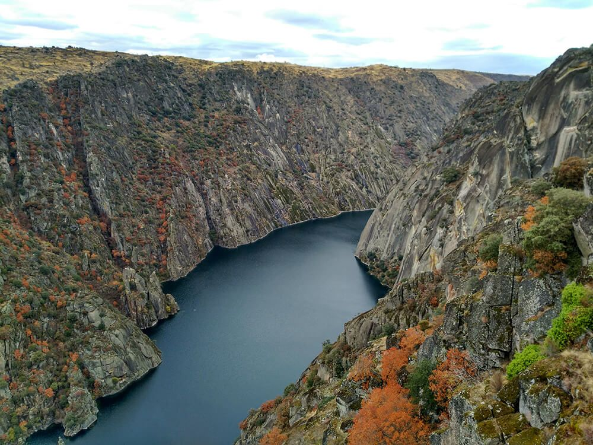Parque natural de Las BatuecasEntre las especies animales que habitan esta zona, destacan la cabra montesa, el gato montés, el buitre negro, la cigüeña negra o el águila real. Respecto a las especies vegetales, abundan los robles y castaños y pueden verse grandes zonas cultivadas de olivos, viñedos y cerezos. 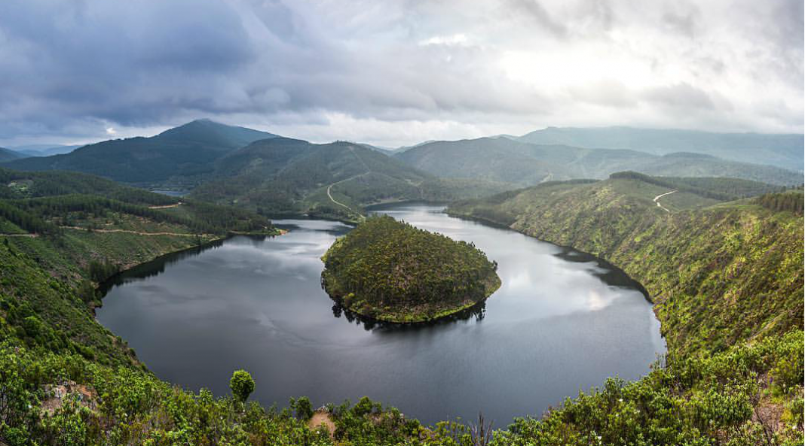Espacio natural protegido de El Rebollar y los AgadonesEl espacio natural protegido de El Rebollar y Los Agadones se sitúa al sur de Ciudad Rodrigo, coincidiendo en parte con la vertiente norte de la Sierra de Gata. Su territorio abarca 11 municipios salmantinos. Es un espacio de más de 50.000 hectáreas, en el que abunda el roble rebollo, que le da el nombre, y en el que conviven especies animales tan raras de ver como el lince ibérico, en peligro de extinción, la cigüeña o el buitre negro. Desde el punto de vista etnográfico, hay que resaltar el habla de El Rebollar, una variante local del altoextremeño que aún hablan unas 4000 personas, y el "panderu cuadráu" de Peñaparda, instrumento que sólo tocan las mujeres, haciéndolo de una manera única y peculiar. 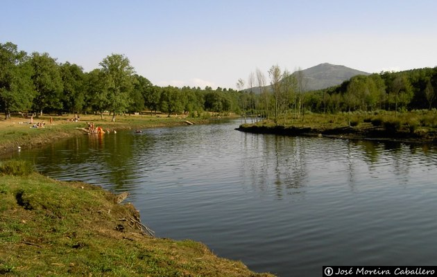Sonido ambiente de El RebollarSierra de CandelarioMás de 10.000 hectáreas de terreno montañoso protagonizan esta porción del Sistema Central salmantino, con cumbres en torno a los 2.400 m. de altitud, como las de la Ceja y el Calvitero. Dominio granítico, retocado por las morfologías cuaternarias, en el que predominan crestas, valles y circos glaciares, desde los que se descuelgan corrientes de agua que avenan tierras y localidades tan pintorescas como Candelario, Béjar o Montemayor del Río. Sus laderas esconden extensos bosques de robles, pinos y castaños que, junto a los coloristas y aromáticos piornales, llegan a remontar las pendientes de la sierra. Una buen oportunidad de conocer la belleza de estos bosques de robles es pasear por la espléndida Dehesa de Candelario. Este magnífico enclave natural está protegido como Espacio Natural Sierra de Candelario, e incluido en la Reserva de la Biosfera Sierras de Béjar y Francia, y se muestra idóneo para desarrollar actividades de senderismo, escalada o bicicleta, que ascienden a los más bellos lugares de alta montaña de Salamanca. 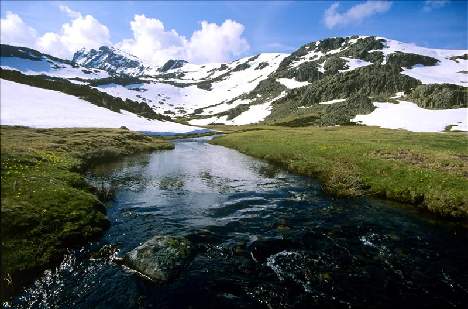Sierra de las QuilamasLa Sierra de Francia es un sistema montañoso dentro del Sistema Central y se encuentra en la parte suroeste de la provincia de Salamanca. Este sistema montañoso se ha dividido tradicionalmente en varias zonas que son, de sur a norte, Valle de las Batuecas, Peña de Francia, Las Quilamas y La Calería. Así, el Espacio Natural de Las Quilamas se encuentra al norte de la Sierra de Francia y su territorio entra dentro de la Reserva de la Biosfera Sierras de Béjar y Francia. Es un espacio de transición entre la llanura del Campo Charro y las montañas de las Sierras de Francia y Béjar. Por su territorio discurren tres ríos: el río Alagón, el Arroyo de la Palla y el río Quilamas, afluente del primero. Los tres han horadado el paisaje dando lugar a profundos valles y agrestes montes, de los que destacan por su altitud el Pico Cervero, con 1.465 metros y el Pico Castillo Viejo, con 1.410 metros. 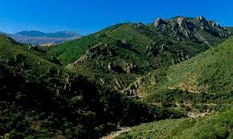Ir arribaTRADICIONESLa ciudad de Salamanca celebra el 12 de junio las fiestas de su patrón San Juan de Sahagún y el 8 de septiembre las de su patrona la Virgen de la Vega. También festeja otras muy famosas como el lunes de aguas y la Semana Santa, declarada de interés turístico internacional. En el resto de la provincia es de interés turístico internacional la procesión del Corpus Christi de Béjar con los Hombres de Musgo, el Carnaval del Toro de Ciudad Rodrigo y la Loa de La Alberca. De interés turístico regional se celebran la fiesta de El Noveno de San Felices de los Gallegos a mediados de mayo, la boda típica de Candelario en el segundo domingo de agosto, el Corpus Christi de La Alberca, la matanza típica de Guijuelo durante enero y febrero. 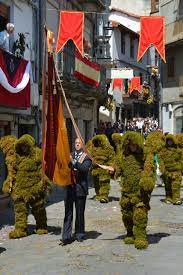Otras fiestas destacadas son los ofertorios de La Alberca, Mogarraz, Cepeda y San Martín del Castañar, el Petitorio de Navidad de Sequeros, los Espantos de Ledesma, La Misa del Gallo de Macotera, La Robra de El Cabaco, la cena de San Silvestre en Aldea del Obispo y La Chorizá de Puerto Seguro. 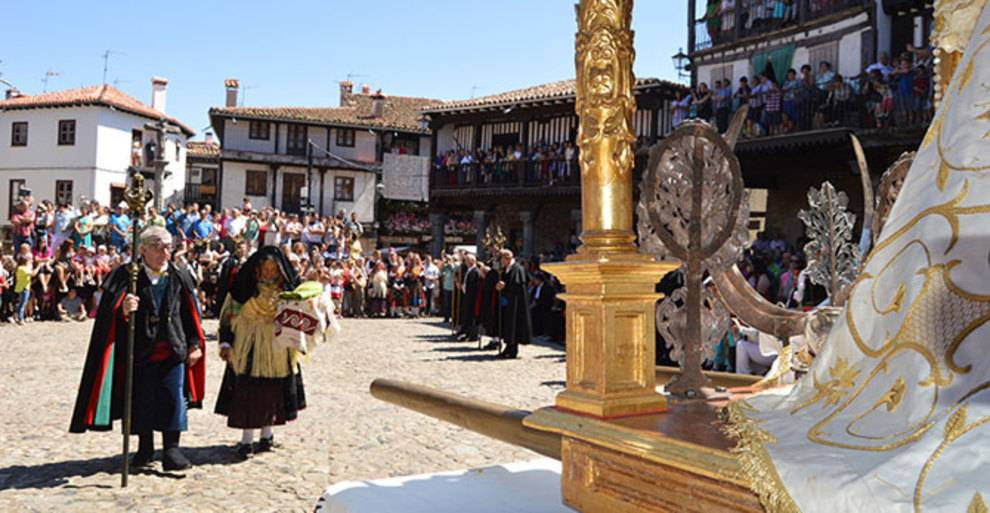El 5 de febrero, se celebra la fiesta de Las Águedas en muchas localidades de la provincia, es especialmente vistosa la de Miranda del Castañar. Otras fiestas comunes en muchas localidades son las animadas por encierros y corridas de toros, se celebran en Alba de Tormes, Aldeadávila de la Ribera, Ciudad Rodrigo, Gallegos de Argañán, Vilvestre y Vitigudino, entre otras. 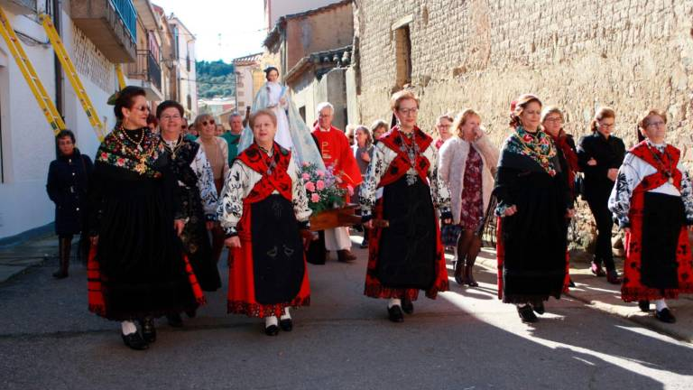Ir arribaOTROS ASPECTOS DE INTERESGastronomiaEntre sus productos cabe destacar el jamón de Guijuelo, la denominación de origen más famosa de la provincia. También son reconocidos, aunque menos famosos, la Carne de Morucha, el Cerdo Ibérico de Salamanca, la Ternera Charra, el Queso Arribes de Salamanca, el farinato de Ciudad Rodrigo. Como platos típicos gozan de fama el hornazo, que en Cepeda está cubierto de azúcar, el limón serrano y la sopa de ajo. Otros menos conocidos son el lechazo, el cochinillo, la chanfaina, las patas de cordero, el calderillo bejarano, el bollo maimón, los chochos de yema y las rosquillas de Ledesma. 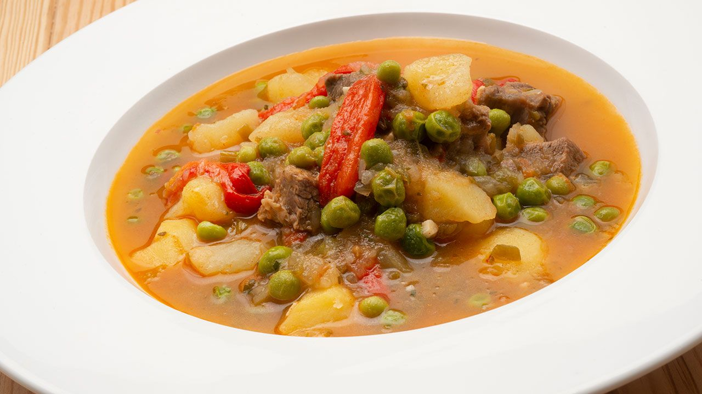FaunaEn esta provincia se puede encontrar una gran diversidad en la fauna, desde cigüeñas negras hasta gatos monteses, pasando por el águila perdicera, el buho real, el buitre leonado o el halcón peregrino, así como cabras montesas o el en peligro de extinción lince iberico 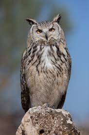 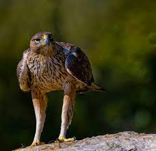FloraPodemos encontrar arboles como robles, castaño y zonas con olivos, viñedos y cerezos. También podemos encontrar amplios pinares y coloridos y aromatios piornales 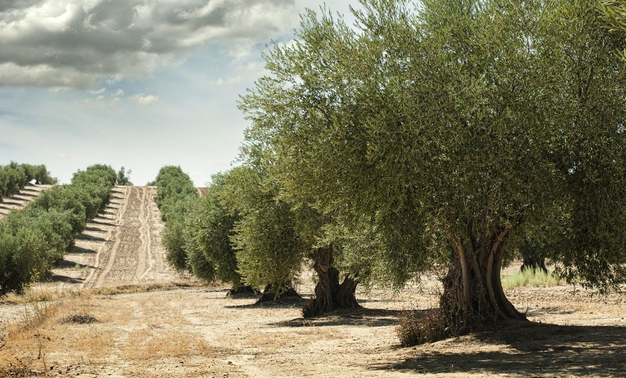 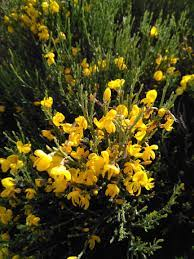Ir arriba |
| Burgos | |
| León | |
| Palencia | |
| Salamanca | |
| Segovia | |
| Soria | |
| Valladolid | |
| Zamora | |
| Pagina de contacto |